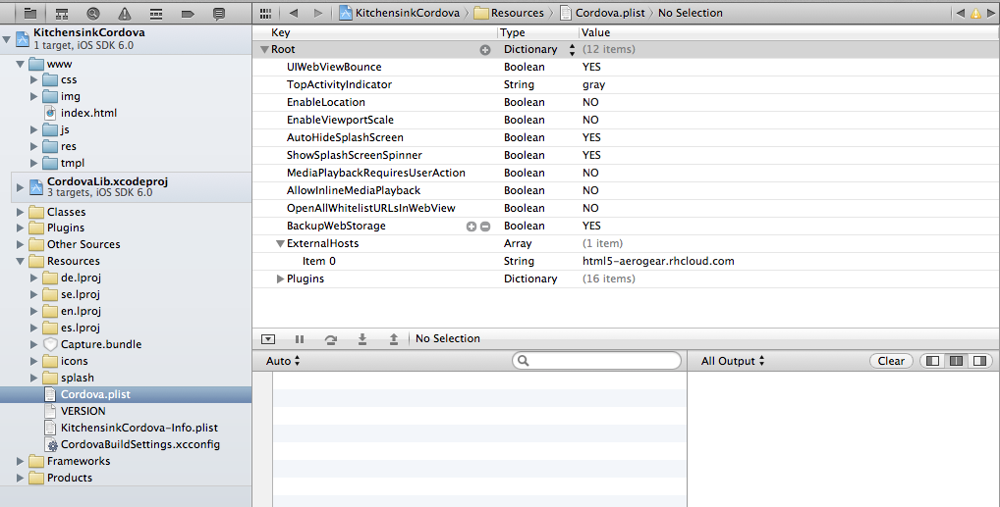

Converting a Mobile HTML5 + REST Web App to a Hybrid App with Apache Cordova
This article will build upon the HTML5 kitchensink quickstart, which we have converted to an Apache Cordova based hybrid application.
What does all of that mean? Basically, this takes our HTML5 + REST / jQuery Mobile based web app and converts it to a native app for both iOS and Android. Currently, these apps will need to be built separately but in the future, we hope to provide a single build step for all supported mobile OS types. These concepts can be applied to the conversion of most HTML5/JS based web apps by just replacing the specific paths described in this article with paths that match your environment.
Download the converted application from https://github.com/jboss-jdf/jboss-as-quickstart/tree/master/kitchensink-cordova.
Repo Structure
Before getting started, it is important to note the structure of this repo and how it may affect your environment. In order to avoid duplicating both files and effort, the web app assets (HTML, CSS, JS) files have been housed in a separate folder called shared. In there, you will find a folder called www under which are the files. In order for this structure to work during your builds, a symbolic link to the www folder from each of the app’s respective www folders must be created. In iOS, that is in the /ios/ folder and in Android, the symbolic link is in the /android/assets folder.
System Requirements & Setup
Cordova Setup details how to set up your system to use Cordova.
iOS
Generate the XCode project using Cordova
Before we can build the app, and run it in the simulator or on a device, we need to create the project using Cordova.
|
Note
|
These steps are based on the Getting Started with iOS guide for Cordova. |
First, we need to create a new project. In a terminal, change into the kitchensink-cordova directory. Now, run Cordova to generate a project:
$CORDOVA_HOME/lib/ios/bin/create ios org.jboss.as.quickstarts.kitchensinkcordova KitchensinkCordova
Now, we need to create the symbolic link from shared/www to ios/www. First we remove the generated www folder then we create the symbolic link:
cd ios rm -rf www ln -s ../../shared/www www
Import the project into XCode
Open Xcode, then select File -> Open, then browse to the <repo-folder>/ios/ folder and select the KitchensinkCordova.xcodeproj file. Click Open and you should see the project in XCode.
|
Tip
|
If the www folder is not visible in the project or appears broken, that means your OS was unable to create the symbolic link from the file in the repo. If it is there but XCode shows it as missing or broken, all you have to do is create the symbolic link. Now you can just open Terminal, navigate to the <repo-folder>/ios/ folder and then create the link like this: This will create the symbolic link and the folder should be fixed in XCode. If the folder is missing, there is a little trick that you have to do to get XCode to see it. First in the <repo-folder>/ios/KitchensinkCordova delete the www file which came from the repo if it exists. Then create a new folder called www. Now from finder, drag that folder into XCode and drop it on the KitchensinkCordova project on the left side of the window. A dialog window should appear and you want to select the option to add the folder as a reference. You should now see that folder listed in XCode. This is where it gets tricky. Go back to Finder and delete the www folder you just created. It will now show as broken in XCode but that’s ok. In Terminal, create the symbolic link using the instructions above and you should be ready to go. |
Next, open AppDelegate.m and add the following code to the beginning of the file just after the @synthesize statement to create a custom User-Agent string that we will check for in our app’s main JavaScript file:
+ (void)initialize {
// Set user agent
NSDictionary *dictionnary = [[NSDictionary alloc] initWithObjectsAndKeys:@"Kitchensink Cordova Webview iOS", @"UserAgent", nil];
[[NSUserDefaults standardUserDefaults] registerDefaults:dictionnary];
[dictionnary release];
}Finally, we must add an exception in Cordova to allow it to access external urls. Open Cordova.plist and add the following url to ExternalHosts:
html5-aerogear.rhcloud.com

That’s it! You should now be ready to see it in action.
Change the Target in the Scheme menu to KitchensinkCordova and select a device:
Click the Run button in the upper left corner of XCode and the iOS Simulator should start and you will see the Kitchensink app running. Going to the list page should show you the list of members from html5-aerogear.rhcloud.com, which is the OpenShift hosted version of the HTML5 kitchensink quickstart. You can also add to that member list from the add screen of the app and also on that add screen, you will see a note referring to your current network connection. That note is proof that Cordova has given you access to native APIs.
Building the App for Devices
After you are able to successfully test your app with the iOS Simulator, it is time to test it on a device. As stated above in the system requirements, this is going to require an Apple Developer account, an iOS development certificate (downloaded to your machine) and a provisioning profile (also downloaded and installed in XCode) for the device(s) you plan to test on. For more information about these requirements, visit the Apple Developer site. Now, on to the steps to deploy to your device.
One important note about the provisioning profile is that the when you create your App ID, it must match the App ID of the app exactly or it won’t work. For this quickstart, we have used org.jboss.as.quickstarts.kitchensinkcordova.KitchensinkCordova as the App ID so you must also create that App ID in your profile and create a provisioning profile for it if you wish to test this quickstart.
Once you have your provisioning profile set up and installed, open your project in XCode again. In the center pane, on the left side under Projects, click on your project (in this case KitchensinkCordova). Now, to the right of that, at the top, click Build Settings. In the build settings, there is a section named Code Signing. Next to the Code Signing Identity, click to change the value to your certificate which should be in the list if you followed the steps from the Apple Developer site on installing your certificate. Your certificate name should look something like iPhone Developer: Kristopher Borchers (<some_random_string>).
Next, make sure your device is attached to your machine, then in XCode, near the top-left corner of the window, you will see the name of your app, followed by the device or simulator that it will run on. Click the device name and select your connected device. Click Run, and it should deploy to and run on your device. That’s it!
Android Build
Generate the Eclipse project using Cordova
Before we can build the app, and run it in the simulator or on a device, we need to create the project using Cordova.
|
Note
|
These steps are based on the Getting Started with Android guide for Cordova. |
First, we need to create a new project. In Eclipse, go to File → New → Other…, and select Android Application Project:
Enter KitchensinkCordova as the project name, and org.jboss.as.quickstarts.kitchensinkcordova as the package:
Click Next >. You can accept the defaults on this screen, and hit Next >:
Click Next >. You can accept the defaults on this screen, and hit Next >:
On the next screen click Next > to create an activity. Call the activity KitchensinkCordova:
Now, hit Finish.
|
Note
|
You may need to click Next after creating the activity to install the relevant Android libraries. |
Copy <CORDOVA_HOME>/lib/android/cordova-2.0.0.jar to libs/.
Copy <CORDOVA_HOME>/lib/android/xml/ to res/xml/.
Now, open up the KitchensinkCordova class in src, alter the class to extend DroidGap, and change the class to look like:
public class KitchensinkCordova extends DroidGap {
@Override
public void onCreate(Bundle savedInstanceState) {
super.onCreate(savedInstanceState);
// Loads the URL with HTML application
super.loadUrl("file:///android_asset/www/index.html");
}
@Override
public void init() {
super.init();
WebSettings settings = this.appView.getSettings();
settings.setUserAgentString("Kitchensink Cordova Webview Android");
}
}Edit the AndroidManifest.xml file and paste the following permissions between the <uses-sdk.../> and <application.../> tags.
<supports-screens
android:largeScreens="true"
android:normalScreens="true"
android:smallScreens="true"
android:resizeable="true"
android:anyDensity="true" />
<uses-permission android:name="android.permission.VIBRATE" />
<uses-permission android:name="android.permission.ACCESS_COARSE_LOCATION" />
<uses-permission android:name="android.permission.ACCESS_FINE_LOCATION" />
<uses-permission android:name="android.permission.ACCESS_LOCATION_EXTRA_COMMANDS" />
<uses-permission android:name="android.permission.READ_PHONE_STATE" />
<uses-permission android:name="android.permission.INTERNET" />
<uses-permission android:name="android.permission.RECEIVE_SMS" />
<uses-permission android:name="android.permission.RECORD_AUDIO" />
<uses-permission android:name="android.permission.MODIFY_AUDIO_SETTINGS" />
<uses-permission android:name="android.permission.READ_CONTACTS" />
<uses-permission android:name="android.permission.WRITE_CONTACTS" />
<uses-permission android:name="android.permission.WRITE_EXTERNAL_STORAGE" />
<uses-permission android:name="android.permission.ACCESS_NETWORK_STATE" />
<uses-permission android:name="android.permission.GET_ACCOUNTS" />
<uses-permission android:name="android.permission.BROADCAST_STICKY" />This gives the app all permissions, which you will want to lock down at some point. Locking down the application is out of the scope of this guide.
Now, support orientation changes by pasting the folowing inside the <activity> tag:
android:configChanges="orientation|keyboardHidden|screenSize"Now, we need to create the symbolic link from shared/www to android/assets.
cd assets
ln -s <PATH_TO_KITCHENSINK_CORDOVA>/shared/www wwwFinally, just like the iOS version, we must add an exception in Cordova to allow it to access our external url. Open res/xml/config.xml, and add the following line:
<access origin="html5-aerogear.rhcloud.com"/>
That’s it! You should now be ready to see it in action. Near the upper left corner of Eclipse, there is a button that looks like a little phone with a green Android on the screen, click that and it will launch the Android Virtual Device (AVD) manager.

If you have not yet created a virtual device, you should do so now. The Cordova Setup guide details how to do this. This sample was built for the Android 2.1 SDK for maximum compatibility with current devices but should work on any 2.x or 4.0 SDK. The sample was not tested on the 3.x series.
Now that you have a virtual device, select it and click Start. On the following screen, keep the default settings and click Launch and the simulator will start. Now that you have a running simulator, go back to Eclipse, close the AVD window, then right-click (control+click) the project in the left pane, and go to Run as -> Android Application. Select your simulator from the list of running devices, and click OK. This will launch the app in the simulator and you are off and running.
Building the App for Devices
Running the app on your Android device is even easier. First, make sure your device has USB debugging enabled. This is usually done by going to Settings -> Applications -> Development -> USB debugging. Once you have done this, make sure there are no virtual devices running, then connect your device to your computer with your USB cable. In Eclipse, go to Run -> Run (or click the green "Play" button in the toolbar) and the app should start on your device. If you still have the simulator running, the app may start in the simulator. If this happens, or you would like to have both the simulator running and your device connected, you can use the method outlined in the section on running your app in the simulator. When you get to the part on selecting a running device, both your simulator and your physical device should be in the list and you can select from there.
Android FAQ
-
When trying to run the project, I receive a message similar to "Android requires compiler compliance level 5.0 or 6.0. Found 1.4 instead." What do I do?
-
As recommended by Eclipse, "Please use Android Tools > Fix Project Properties" will fix this issue
-
-
I receive the error "Unable to resolve target android-7", what do I do?
-
This is due to an incorrect SDK version. This app was built for Android 2.1 and should work on any 2.x or 4.0 device. In order to build the project though, you will need to have the Android 2.1 (API 7) installed using the Android SDK Manager which can be found in the Eclipse toolbar.
-
-
Why do the transitions look so shaky or choppy?
-
jQuery Mobile has some issues with Android and transitions. The Android browser has some issues with these transitions which causes a flicker or jump during or at the end of the animation. This is further exagerated in the emulators. You can read more about jQuery Mobile’s work with page transitions on Android here https://github.com/jquery/jquery-mobile/issues/3217
-